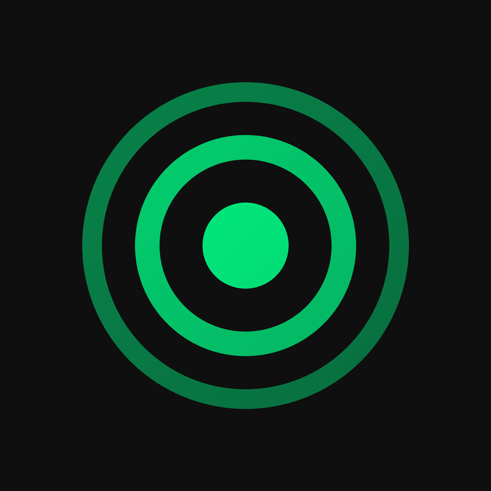

New Music Pulse
New music videos, every week. New Music Pulse is a personal, non-commercial YouTube playlist of newly released official music videos, starting with heavy metal. A small tool finds each week's new official videos, the owner approves the list, and the tool adds them to the playlist on the New Music Pulse YouTube channel.
It only uses the YouTube Data API to read public video information and to manage its own playlist. It does not access anyone else's account.